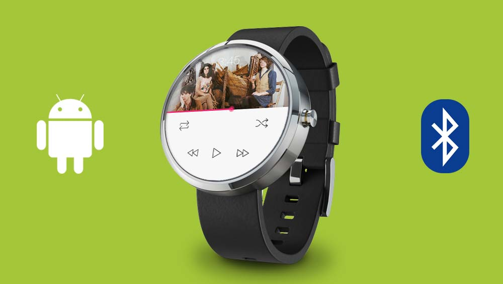
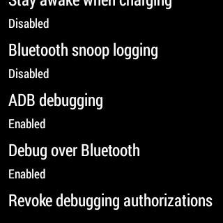
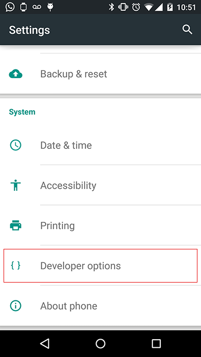
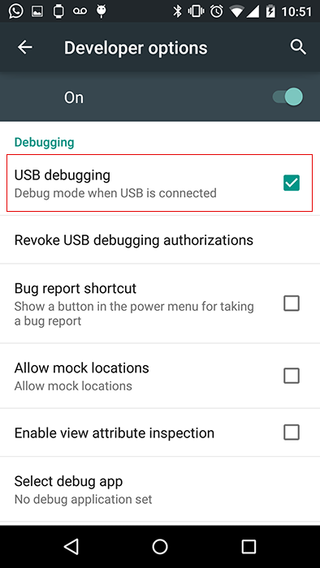
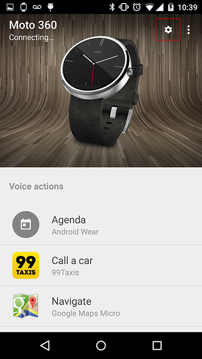
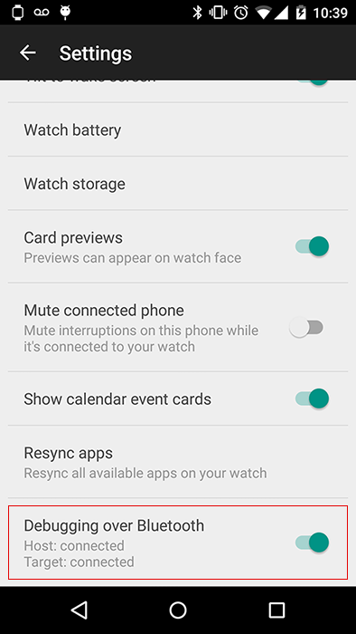
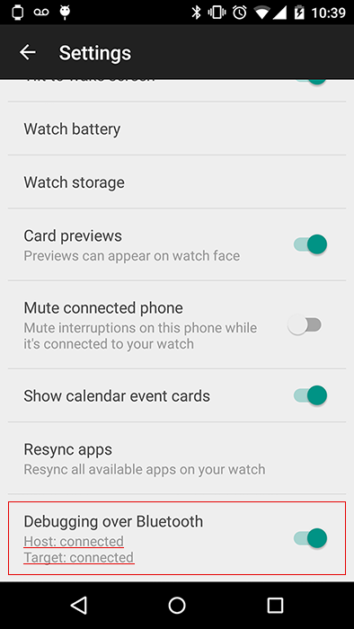

Bluetooth Debugging no Android Wear
Bluetooth debugging no Android Wear

Vamos ver os passos para poder conectar um Moto360 no seu computador para podre desenolver aplicações.
Ligar o Debugging over Bluetooth no Android Wear
Vá no seu Android Wear e clique em Settings > Developer Options e habilite as opções ADB Debugging e Debug Over Bluetooth.

Conecte e habilte o USB Debugging no seu Celular Android
Conecte seu celular com o cabo USB ao computador a vá em Android Mobile > Developer Options e habilte a opção USB Debugging.


Habilite o Debugging over Bluetooth no Celular Android
Abra o aplicativo Android Wear App, vá em Settings e habilete a opção Debugging Over Bluetooth.


Conecte o ADB ao seu Android Wear
Abra o aplicativo Terminal
Verifique que seu Celular esta conectado usando o comando:
$ adb devicesAgora conecte seu Android Wear (no meu caso o Moto 360) usando os comandos:
$ adb forward tcp:4444 localabstract:/adb-hub $ adb connect localhost:4444Verifique que seu Adnroid Wear está conectado. Abra o aplicativo Android Wear App e ele deve mostrar que o estatus esta conectado para o Host e para o Target.

Outra forma é rodando o comando adb devices novamente e deve aparecer o device localhost:4444 que é o seu Android Wear.
BONUS TIME
Vamos ver com otirar print-screens do nosso Android Wear device.
Tirar um print-screen
$ adb -s localhost:4444 shell screencap -p /sdcard/DCIM/screen.png
Mover o print-screen para o seu computador
$ adb -s localhost:4444 pull /sdcard/DCIM/
Apagar o print-screen que está no seu Android Wear Device
$ adb -s localhost:4444 shell rm /sdcard/DCIM/screen.png
Conectar na shell do Android Wear
$ adb -s localhost:4444 shell
Agora podemos listar todos os APPs instalados no moto360.
shell@minnow:/ $ pm list packages
Para desinstalar um aplicativo do seu Android Wear
$ pm uninstall [package_name]
Para sair basta usar o comando exit.
shell@minnow:/ $ exit
Pronto agora você já pode começar a cirar sua aplicação para o Android Wear!